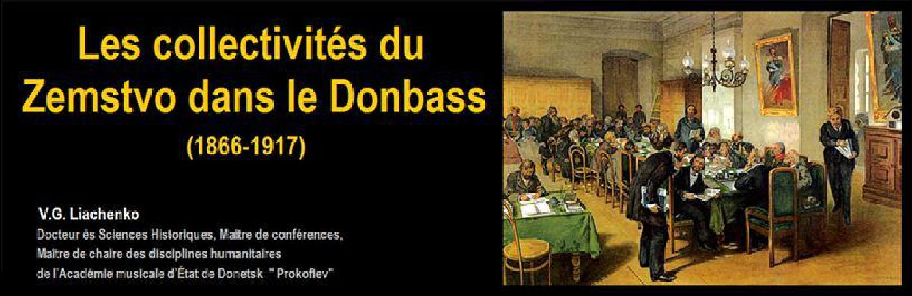

Les collectivités du Zemstvo dans le Donbass (1866-1917)
par V. G. LIACHENKO

L’annulation du droit de servage dans l’Empire Russe, en 1861, provoqua la nécessité de réaliser un ensemble de réformes. Le 1 janvier 1864 fut publié « Règlement sur des institutions provinciales et locales de zemstvo », qui établit les organes électifs des collectivités relevant de tout ordre – les zemstvos. Elus pour des mandats de 3 ans, ils furent constitués en organes administratifs (des assemblées locales et provinciales de zemstvo) et en organes exécutifs (des bureaux communaux locaux et provinciaux). Les élections dans les assemblées de zemstvo se réalisèrent durant trois congrès électifs (selon des curies). Les députés d’assemblées de zemstvo étaient appelés les glasniés (ayant le droit de vote). Les glasniés se réunissaient en session pour considérer les rapports annuels et approuver le budget.
Les glasniés ne bénéficiaient d’aucune rémunération pour leurs services. A l’inverse des membres de bureaux communaux de zemstvo qui travaillaient à temps plein et étaient, bien légitimement, rémunérés. Par ailleurs, le zemstvo comprenait également d’autres emplois rémunérés tels que des médecins, des vétérinaires, des agronomes, des enseignants, des statisticiens et d'autres employés, qui représentaient une sorte de troisième corps dans le zemstvo (le premier étant les glasniés et le deuxième les membres de bureaux communaux du zemstvo). Les dépenses de fonctionnement étaient assurées par un impôt spécifique de la population.
En vertu de la loi de 1864, les zemstvos furent établis dans 34 provinces. L'un d'eux fut celui d’Ekaterinoslav, qui comprenait les districts de Bakhmoute et de Marioupol. Certaines activités des bureaux communaux locaux du zemstvo ont fait l'objet de notre analyse. Les sources pour l'étude ont été, bien évidemment, des documents des bureaux communaux de zemstvo, les journaux de réunions des bureaux communaux locaux, mais également « Le Journal populaire du zemstvo de Bakhmoute ». Ces documents historiques permettent de découvrir entièrement le problème.
Dans le Donbass, le zemstvo fut créé le 5 avril 1866 dans le district de Bakhmoute et, en janvier de 1869, dans le district de Marioupol.
L’imposition du zemstvo :
Pendant des années, de 1866 à 1875, l’objet de la fiscalisation a été la propriété de terres. Elle donna jusqu’à 85% de l’impôt du zemstvo. En outre, l’immobilier urbain, ainsi que les certificats de pêche et de commerce, furent également fiscalisés. A partir de 1881, les impôts du zemstvo furent à la charge des industries, des usines et des mines. Ces mesures élargirent considérablement les possibilités de budgets des zemstvos et l'éventail des tâches à accomplir.
Une assemblée du zemstvo
Le fonctionnement du zemstvo :
Le mécanisme de fonctionnement des bureaux communaux de zemstvos peut être illustré par l’exemple ci-après. En 1913 le rassemblement du village de Staromikhaïlovka adressa au bureau communal du zemstvo une demande de construction d'un hôpital dans le village. Le congrès local de médecins se prononça pour la construction d’un dispensaire avec services ambulatoires et non pas la construction de l'hôpital. Lors de la session suivante, le bureau communal incita le congrès local des médecins à trouver un accord avec la communauté rurale de Staromikhaïlovka attribuant un terrain pour le dispensaire ou en versant une allocation de différence entre le coût d'un hôpital et celui d’un dispensaire sur les propres fonds de la communauté. En vertu de la décision du rassemblement du village, 25 000 roubles furent alors alloués pour la construction de l’hôpital.
Réunion locale d’un zemstvo
Un peu avant cela, en 1907, un autre exemple dans le district de Bakhmoute peut illustrer le fonctionnement du zemstvo. Le district de Bakhmoute comprenait alors 257 communautés rurales, dans lesquelles vivaient 259 000 de personnes. Sur ces 257 communautés rurales 141 profitèrent à grande échelle de revenus supplémentaires issus du chemin de fer, des usines, des mines et bénéficièrent de la redevance des sous-sols produites par les taxes dont éteint soumises les exploitations minières. Ces revenus supplémentaires augmentèrent considérablement les capacités financières du zemstvo et permirent de résoudre avec succès des problèmes courants du développement social.
Dans son numéro du 15 janvier 1914, « Le Journal populaire du zemstvo de Bakhmoute » publie un article de N. Kiritchenko, consacré au 50ème anniversaire des activités institutionnelles du zemstvo dans le district. L'auteur présente les données relatives à la situation dans les activités de la santé et de l’éducation. Avant cette réforme, le district n’avait qu’un hôpital dans la ville de Bakhmoute qui était essentiellement réservé aux patients militaires. En 1914, grâce aux actions conjuguées des glasniés et des communautés rurales, le nombre d'hôpitaux passa à quatorze auxquels il fallait rajouter douze dispensaires avec services ambulatoires, dix postes médicaux et une maison de convalescence. Tous les établissements médicaux s’installèrent dans des bâtiments spécialement construits pour le corps médical et les auxiliaires médicaux.
Comme en témoignent les documents historiques, les médecins du zemstvo et le personnel soignant recevaient un salaire décent. Ainsi le magazine du bureau communal de zemstvo de Mariupol de 1891 témoigne des conditions de vie du Docteur G.K. Tokhtamycheva, médecin public du zemstvo du village de Stariy Kremenchik. Ainsi, on peut découvrir que le médecin recevait à la fois un salaire de la communauté rurale de 900 roubles par an et percevait du zemstvo les médicaments nécessaires à sa fonction. Par ailleurs la communauté fournissait généralement une maison pour le médecin. Au regard de ces éléments et compte tenu du bas coût de la nourriture dans le village, on peut aisément en déduire que ces avantages permettait une vie dans la dignité pour le médecin du zemstvo.
On observe la même chose dans le domaine de l’éducation populaire. Avant la réforme de 1894, le district de Bakhmoute n’avait que huit écoles, où étudiaient environ de 1 300 élèves. En 1914 le système de l'éducation du zemstvo présentait une image différente. À cette époque le nombre d’écoles était passé à 191, dans lesquelles étudiaient 17 000 élèves. L’enseignant du zemstvo recevait également un salaire décent pour son travail, ainsi qu’un supplément de salaire pour son travail sur l'alphabétisation de la population adulte de 40 à 60 roubles, et enfin une indemnité pour la direction de chœur d’élèves de 20 roubles. Il percevait également gratuitement les manuels scolaires nécessaires pour l’enseignement.
Ainsi, durant les années de fonctionnement du zemstvo, ce système permit d’améliorer considérablement la situation sur le terrain : d’accélérer les rythmes de développement économique, d'améliorer les infrastructures locales de santé et d’éducation ainsi que différentes autres actons bénéfiques à la communauté. On peut donc considérer que les activités du zemstvo furent assez réussie et fructueuse et représentent un phénomène social unique. L’expérience du fonctionnement du zemstvo et des apports considérables réalisés au profit de la population, mérite, dans les conditions contemporaines de la construction de la République Populaire de Donetsk, d’étudier l’intérêt que pourrait représenter le retour de ce système dans l’organisation de notre pays.
Partager cette page